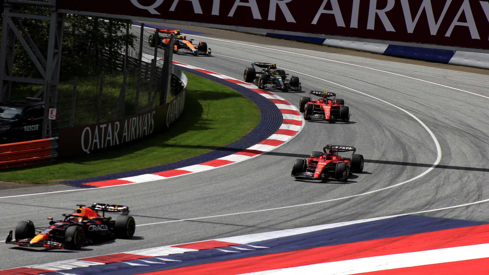

FORMULA 1 / KAUSI 2026
F1 ENNUSTUKSET2026.
Tee omat arvauksesi seuraavalle kaudelle!
Tee ennustukset01 / Lähtöruudukko
Aikaa kauden 2026 alkuun:
0päivää
0tuntia
0minuuttia
0sekuntia

Tee omat arvauksesi seuraavalle kaudelle!
Tee ennustukset